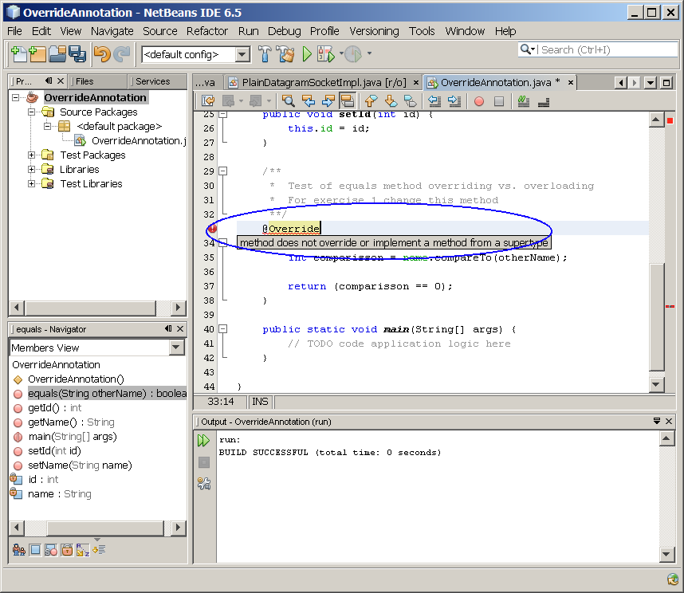
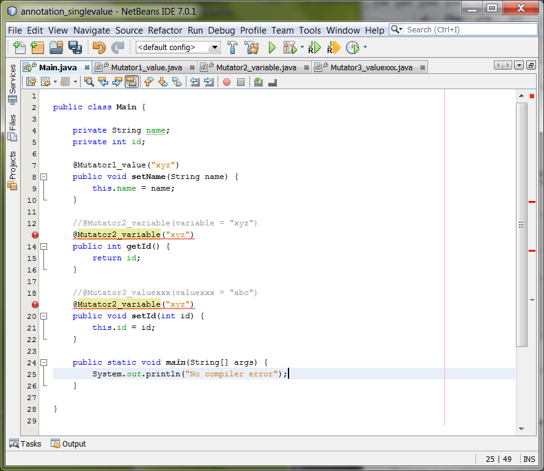

@Copyright notice: This content is
meant to be used only for paying
subscriber's personal
consumption. And any shape or or form of sharing with others is
strictly
prohibited
unless a special licensing arrangement has been made with
JPassion.com.
Java Annotation
Today
Java™
technology is everywhere—in large enterprise systems, desktops,
hand-held
devices, and smart cards. Consequently, Java technology is the platform
of
choice for developers all over the world. All this has happened in the
short
time since the technology was first introduced in 1995. While there
have
been updates and enhancements since the first version, release 5.0 of
the
core Java platform brings to the table more language-level updates and
other enhancements than at any other time, through the incorporation of
a number
of Java Specification Requests (JSRs). In this hands-on session, you
will
learn about all these changes and how to build desktop applications
using
version 5.0 of the Java platform. This hands-on lab takes
you through the basics of using Java annotation.
Expected duration: 120 minutes
Resources
Change Log
- March. 12th, 2007: Created
- June 10th, 2007: Homework is added
- Jan. 10th, 2009: NetBeans 6.5 is used
- July 1st, 2010: Tested and updated with NetBeans 6.8 (Sang Shin)
- July 14th, 2010: Tested and updated with NetBeans 6.9, Lab zip
file name is changed (Sang Shin)
- Sep. 7th, 2011: Projects are provided as "ready to open" projects
(Sang Shin)
- Nov. 17th, 2011: Exercise 6 and 7 are modified, Homework is
clarified a bit (Sang Shin)
- Nov. 19th, 2011: Homework is further clarified (Sang Shin)
- Dec. 11th, 2011: Comments from Piotrek are reflected (Sang Shin)
Lab Exercises
Most exercises in this lab are provided in the form of
"ready-to-open-and-run"
NetBeans projects in order to maximize the effectiveness of the
learning
process. You are welcome to create them from scratch. It is
also
strongly encouraged you do as much experimentation of your own by
changing the provided code.
Exercise 1: Override annotation
Programmers sometimes overload a method when they mean to override it;
a classic example of this is the
equals()
method which is defined in
the
Object class. For
example, let's say the
AnnotatedClass.java
contains the following method.
public boolean equals(String
otherName) {
int comparisson = name.compareTo(otherName);
return (comparisson == 0);
}
|
The programmer thinks that he is overriding the
equals(Object obj) method from
the
Object class, but since
that takes an
Object
as a parameter, the result (which is perfectly correct Java) is
an
overloaded method instead. This could, potentially cause some
very subtle and therefore hard to debug runtime errors. Adding a
standard "
@Override" annotation
type to this can identify these
problems at compile
time.
(1.1)
Create a new project called "annotation_override"
0. Start NetBeans IDE if you have not done so yet.
1. Create a new NetBeans project
- Select File->New Project (Ctrl+Shift+N). The New Project dialog box appears.
- Under Choose Project
pane,
select Java under Categories and Java Application under Projects.
- Click Next.
- Under Name and Location
pane, for the Project Name
field, type in annotation_override as
project name.
- For Create Main Class
field, type in annotation_override.
- Click Finish.
- Observe that annotation_override
project
appears and IDE generated annotation_override.java
is displayed in the source editor window of NetBeans IDE.
2. Modify the IDE generated
OverrideAnnotation.java
as shown in Code-1.11 below. Study the code by paying
special attention to the bold fonted parts.
public class OverrideAnnotation {
private String name;
private int id;
/**
* Constructor
**/
public OverrideAnnotation() {
name = "Java Passion!";
}
public String getName() {
return name;
}
public void setName(String name) {
this.name = name;
}
public int getId() {
return id;
}
public void setId(int id) {
this.id = id;
}
/**
*
Test of equals method overriding vs. overloading
*
For exercise 1 change this method
**/
public
boolean equals(String otherName) {
int comparisson = name.compareTo(otherName);
return (comparisson == 0);
}
public static void main(String[] args) {
// TODO code application
logic here
}
}
|
Code-1.11:
equals() method
without @Override annotation
3. Build and run the project
- Right click OverrideAnnotation project
and select Run.
- Observe the compilation of the code succeeds.
(Figure-1.13 below) This is NOT
desirable. What
we want is compile time detection of a problem.
run:
BUILD SUCCESSFUL (total time: 1 second)
|
Figure-1.13: Result of running ExtendThreadClassTest0 application
return to top of the
exercise
(1.2)
Modify the "annotation_override" project
1. Modify the
OverrideAnnotation.java
as shown in Code-1.15 below. The code fragments that need to be
added are highlighted in
bold
and blue-colored font.
public class OverrideAnnotation {
private String name;
private int id;
/**
* Constructor
**/
public OverrideAnnotation() {
name = "Java Passion!";
}
public String getName() {
return name;
}
public void setName(String name) {
this.name = name;
}
public int getId() {
return id;
}
public void setId(int id) {
this.id = id;
}
/**
* Test of equals method overriding vs.
overloading
* For exercise 1 change this method
**/
@Override
public boolean equals(String otherName) {
int comparisson =
name.compareTo(otherName);
return (comparisson == 0);
}
public static void main(String[] args) {
// TODO code application
logic here
}
}
|
Code-1.15: equals() method with @Override annotation
2. Observe that the compiler now detects a problem. This is a
desired behavior.

Figure-1.16: Result
3. Modify the
OverrideAnnotation.java
as shown in Code-1.17 below. The code fragments that need to be
added are highlighted in
bold
and blue-colored font.
public class OverrideAnnotation {
private String name;
private int id;
/**
* Constructor
**/
public OverrideAnnotation() {
name = "Java Passion!";
}
public String getName() {
return name;
}
public void setName(String name) {
this.name = name;
}
public int getId() {
return id;
}
public void setId(int id) {
this.id = id;
}
/**
* Test of equals method overriding vs.
overloading
* For exercise 1 change this method
**/
@Override
public boolean equals(Object otherName)
{
String newName =
(String) otherName;
int comparison =
name.compareTo(newName);
return (comparison == 0);
}
public static void main(String[] args) {
// TODO code application
logic here
}
}
|
Code-1.17: Make it overriden method
4. Build the project. Observe that there is no compile error
anymore.
Solution:
This exercise up to this point is provided as a ready-to-open-and-run
NetBeans project as part of hands-on lab zip file. You can find it as
<LAB_UNZIPPED_DIRECTORY>/javase5_annotation/samples_netbeans/OverrideAnnotation.
You can just open it and run it.
Summary
In this exercise, you learned how to use a simple marker annotation
called
@Override to detect an unintentional overloading at the compile time.
Exercise 2: Single-member annotation
Many annotations will only require a
single value to be associated with them. Examine the Mutator.java
file which contains the definition of a single membered
annotation. The goal of this exercise is to edit the
AnnotatedClass.java file
and add a Mutator annotation
to the
setName method.
There are two approaches you can do this. The first approach is
to modify the code as following:
@Mutator(variable
= "name")
public void setName(String name) |
The second approach is as following. This is possible since this
is a single member annotation we do not need to specify the name of the
member to assign the value. However, if you try to compile this
code, you will get a compiler error. Why? The answer is
that for single member annotations the identifier used for the member
must be called
value.
You will modify
Mutator.java
to correct
this.
@Mutator("name")
public void setName(String name)
|
(2.1)
Build and run "annotation_singlevalue" application
1. Open
annotation_singlevalue
NetBeans project.
- Select File->Open Project (Ctrl+Shift+O). The Open Project dialog box appears.
- Browse down to <LAB_UNZIPPED_DIRECTORY>/javase5_annotation/samples_netbeans
directory.
- If you unzipped the 1107_javase5_annotation.zip
file under C:\handsonlabs
directory under Windows, the directory to which you want
to browse down should be C:\handsonlabs\javase5_annotation\samples_netbeans.
- If you unzipped the 1107_javase5_annotation.zip
file under $HOME
directory under Solaris/Linux, the directory to which you want
to browse down should be $HOME/javase5_annotation/samples_netbeans.
- Select annotation_singlevalue.
- Click Open Project.
- Observe that the annotation_singlevalue
project node appears under Projects tab
window.
2. Build and run annotation_singlevalue
project.
- Right-click annotation_singlevalue
project and select Run.
- Observe the result in the Output window as shown below.
compile:
run:
No compiler error
|
return to top of the
exercise
(2.2)
Study the
application
1.Mutator1_value.java
public @interface Mutator1_value
{
String value();
}
|
2. Mutator2_variable.java
public @interface
Mutator2_variable {
String variable();
}
|
3. Mutator3_valuexxx.java
public @interface
Mutator3_valuexxx {
String valuexxx();
}
|
4. Main.java
public class Main {
private String name;
private int id;
@Mutator1_value("xyz")
public void setName(String name) {
this.name = name;
}
@Mutator2_variable(variable = "xyz")
public int getId() {
return id;
}
@Mutator3_valuexxx(valuexxx
= "abc")
public void setId(int id) {
this.id = id;
}
public static void main(String[] args) {
System.out.println("No
compiler error");
}
}
|
return to top of the
exercise
(2.3)
Modify the
application
1. Modiffy Main.java
public class Main {
private String name;
private int id;
@Mutator1_value("xyz")
public void setName(String name) {
this.name = name;
}
//@Mutator2_variable(variable = "xyz")
@Mutator2_variable("xyz")
public int getId() {
return id;
}
//@Mutator3_valuexxx(valuexxx = "abc")
@Mutator2_variable("xyz")
public void setId(int id) {
this.id = id;
}
public static void main(String[] args) {
System.out.println("No
compiler error");
}
}
|
2. Observe the compile error.

return to top of the
exercise
Exercise 3: Multiple member (Normal)
annotation
Annotations can be defined so that they
have multiple values and, where required, default values can be
provided. In this exercise, you will learn how to define an
annotation for accessor methods. This annotation has both the
name of the variable and the type of the variable defined as members of
the annotation. You will also learn how to specify a default value - In
order to specify a default value, add default "value" after the member
name and before the semi-colon. . You will also learn how to modify the
Accessor annotation so that the variableType has a default value of
"String".
(3.1)
Build and run the application
1. Open
annotation_normal
NetBeans project.
- Select File->Open Project (Ctrl+Shift+O). The Open Project dialog box appears.
- Browse down to <LAB_UNZIPPED_DIRECTORY>/javase5_annotation/samples_netbeans
directory.
- Select annotation_normal.
- Click Open Project.
- Observe that the annotation_normal
project node appears under Projects tab
window.
2. Build and run annotation_normal
project.
- Right-click annotation_normal
project and select Run.
- Observe the result in the Output window as shown
below.
Compiling 1 source file to
C:\1passion.labs\handson_javase_adv\javase5_annotation\samples_netbeans\annotation_normal\build\classes
compile:
run:
No compiler error
|
return to top of the
exercise
(3.2)
Study the code
1. Accessor.java. This file
defines an annotation for accessor methods. (Accessor methods are
the methods that accesses value of fields and takes the form of
getXXX().) This has both the name and the type of the variable
defined as members of the annotation. It also shows how to set a
default value to one of its members.Study the
code by paying
special attention to the bold fonted parts.
/**
* Annotation definition for an accessor method. This
shows the use of
* multiple members.
**/
public @interface Accessor {
String variableName();
String variableType() default "String";;
//String value();
}
|
2. Main.java
public class Main {
private String name;
private int id;
public Main() {
name = "Java Passion!";
}
@Accessor(variableName
= "name", variableType = "int")
public int getId() {
return id;
}
// The "variableType" can be omitted since there is
// a default value. If the default has not
been set,
// then you have to explicitly specify it.
@Accessor(variableName = "xyz")
public String getName() {
return name;
}
public static void main(String[] args) {
System.out.println("No
compiler error");
}
}
|
Exercise 4: Nested annotation types
Since an annotation is defined in the
same way as an interface, it is possible to include types, in an
annotation type definition, that they themselves are annotations.
In this exercise, you will learn how to define a complex annotation
type called Name that
contains a particular person's first and last
name and another annotation that uses Name for the type of the
value.
(4.1)
Build and run the application
1. Open
annotation_nested
NetBeans project.
- Select File->Open Project (Ctrl+Shift+O). The Open Project dialog box appears.
- Browse down to <LAB_UNZIPPED_DIRECTORY>/javase5_annotation/samples_netbeans
directory.
- Select annotation_nested.
- Click Open Project.
- Observe that the annotation_nested
project node appears under Projects tab
window.
2. Build and run annotation_nested
project.
- Right-click annotation_nested
project and select Run.
- Observe the result in the Output window as shown
below.
Compiling 1 source file to
C:\1passion.labs\handson_javase_adv\javase5_annotation\samples_netbeans\annotation_nested\build\classes
compile:
run:
No compiler error
|
return to top of the
exercise
(4.2)
Study the code
1. Name.java.
public @interface
Name {
String firstName();
String lastName();
}
|
2. Reviewer.java
public @interface Reviewer {
Name
my_name();
//Name value();
}
|
3. Main.java
@Reviewer(my_name
= @Name(firstName = "James", lastName = "Gosling"))
public class Main {
public static void main(String[] args) {
System.out.println("No
compiler error");
}
}
|
Exercise 5: Meta annotation
Annotation types designed for
annotating annotation type declarations are called meta-annotation
types. The package java.lang.annotation provides several of
these. The meta-annotation types can be used to restrict the
annotation types they annotate.
- @Target(ElementType.FIELD)
- @Retention(RetentionPolicy.RUNTIME)
The Target meta-annotation is used to specify where the annotation is
to be applied. The possible choices include the following:
- FIELD
- TYPE (Class, interface or enum definition)
- METHOD
- PARAMETER
- CONSTRUCTOR
- LOCAL_VARIABLE
- ANNOTATION_TYPE
- PACKAGE
The Retention meta-annotation is used to specify how long an annotation
is retained. The possible choices include the following:
- SOURCE: This annotation information is only retained in the
source code and is not recorded in the generated class file.
- CLASS: This annotation is recorded in the class file by the
compiler, but need not be retained by the virtual machine at
runtime. This is the default if @Retention is not specified.
- RUNTIME: Annotations are recorded in the class file by the
compiler and retained by the virtual machine at runtime and can be read
reflectively.
In this exercise, you learn how to use two meta-annotation types.
(5.1)
Build and run the application
1. Openannotation_meta
NetBeans project.
- Select File->Open Project (Ctrl+Shift+O). The Open Project dialog box appears.
- Browse down to <LAB_UNZIPPED_DIRECTORY>/javase5_annotation/samples_netbeans
directory.
- Select annotation_meta.
- Click Open Project.
- Observe that the annotation_meta
project node appears under Projects tab
window.
2. Build and run annotation_meta
project.
- Right-click annotation_meta
project and select Run.
- Observe the result in the Output window as shown
below.
Compiling 1 source file to
C:\1passion.labs\handson_javase_adv\javase5_annotation\samples_netbeans\annotation_meta\build\classes
compile:
run:
No compiler error
|
return to top of the
exercise
(5.2)
Study the code
1. Exposed.java.
import java.lang.annotation.*;
@Target(ElementType.FIELD)
@Retention(RetentionPolicy.RUNTIME)
public @interface Exposed {
String value();
}
|
2. Main.java
public class Main {
@Exposed("name")
private String name;
//@Exposed("name") // Compile error
public void setName(String name) {
this.name = name;
}
public static void main(String[] args) {
System.out.println("No
compiler error");
}
}
|
return to top of the
exercise
(5.3)
Modify the code
1. For your own exercise, use annotation applicable to multiple places
by using an array mechanism as shown in Code-5.15 below
| @Target({ElementType.CONSTRUCTOR,
ElementType.METHOD}) |
Code-5.15: Multiple application of TARGET
Exercise 6: Annotation rentention
@Retention meta annotation is used to specify how long the annotation
information should be retained. There are 3 retention policies.
- SOURCE - SOURCE indicates information will be placed i n the
source file but will not be available from the class files
- CLASS (Default)- CLASS indicates that information will be placed
in the class file, but will not be available at runtime through
reflection
- RUNTIME - RUNTIME indicates that information will be stored in
the class file and made available at runtime through reflective APIs
(6.1)
Build and run the application
1. Open
annotation_runtime
NetBeans project.
- Select File->Open Project (Ctrl+Shift+O). The Open Project dialog box appears.
- Browse down to <LAB_UNZIPPED_DIRECTORY>/javase5_annotation/samples_netbeans
directory.
- Select annotation_runtime.
- Click Open Project.
- Observe that the annotation_runtime
project node appears under Projects tab
window.
2. Build and run annotation_runtime
project.
- Right-click annotation_runtime
project and select Run.
- Observe the result in the Output window as shown
below.
Class AnnotatedClass has 2
annotations
Annotation 0: @MyAnnotation_RuntimeRetention(someType=String,
someName=JPassion), typeMyAnnotation_RuntimeRetention
Annotation 1: @Reviewer_RuntimeRetention(value=@Name(first=James,
last=Gosling)), typeReviewer_RuntimeRetention
|
return to top of the
exercise
(6.2)
Study the code
1. Definition of MyAnnotation_RuntimeRetention annotation with
RetentionPolicy.RUNTIME meta annotation -
MyAnnotation_RuntimeRetention.java
import
java.lang.annotation.Retention;
import java.lang.annotation.RetentionPolicy;
@Retention(RetentionPolicy.RUNTIME)
public @interface MyAnnotation_RuntimeRetention {
String someName();
String someType() default "String";
}
|
2. Definition of Reviewer_RuntimeRetention annotation with
RetentionPolicy.RUNTIME meta annotation - Reviewer_RuntimeRetention.java
import java.lang.annotation.*;
@Retention(RetentionPolicy.RUNTIME)
public @interface Reviewer_RuntimeRetention {
Name value();
}
|
3. Definition of MyAnnotation_ClassRetention annotation with
RetentionPolicy.CLASS meta annotation- MyAnnotation_ClassRetention.java
import
java.lang.annotation.Retention;
import java.lang.annotation.RetentionPolicy;
@Retention(RetentionPolicy.CLASS)
public @interface MyAnnotation_ClassRetention {
String someName();
String someType() default "String";
}
|
4. Main.java
import java.lang.annotation.*;
public class Main {
AnnotatedClass ac;
public Main() {
ac = new AnnotatedClass();
}
public void printAnnotations() {
// Get Class object of the
AnnotatedClass class
Class c = ac.getClass();
// Get all annotations
applied to the AnnotatedClass class.
// Only the annotations with
RUNTIME retention are retained during runtime.
Annotation[] annotations =
c.getAnnotations();
int numberOfAnnotations =
annotations.length;
System.out.println("Class "
+ c.getName() + " has " +
numberOfAnnotations + " annotations");
for (int i = 0 ; i <
numberOfAnnotations; i++) {
System.out.println("Annotation " + i + ": " + annotations[i] +
", type" + annotations[i].annotationType().getName());
}
}
public static void main(String[] args) {
Main ar = new Main();
ar.printAnnotations();
}
}
|
5. AnnotatedClass.java
@MyAnnotation_RuntimeRetention(someName="JPassion")
@MyAnnotation_ClassRetention(someName="Sang
Shin")
@Reviewer_RuntimeRetention(@Name(first
= "James", last = "Gosling"))
public class AnnotatedClass {
private String name;
private int id;
public AnnotatedClass() {
name = "Java Passion!";
}
@Accessor(variableName = "name")
public String getName() {
return name;
}
@Mutator(variable ="name")
public void setName(String name) {
this.name = name;
}
@Accessor(variableName = "name", variableType =
"int")
public int getId() {
return id;
}
public void setId(int id) {
this.id = id;
}
public boolean equals(String otherName) {
int comparisson =
name.compareTo(otherName);
return (comparisson == 0);
}
}
|
return to top of the
exercise
(6.3)
Modify the code
1. Modify MyAnnotation_ClassRetention.java as shown below. The
modification is to change the Retention policy to
RetentionPolicy.RUNTIME from
RetentionPolicy.CLASS
import
java.lang.annotation.Retention;
import java.lang.annotation.RetentionPolicy;
@Retention(RetentionPolicy.RUNTIME)
public @interface MyAnnotation_ClassRetention {
String someName();
String someType() default "String";
}
|
2. Do the clean build
- Right click project and select Clean
and Build
3. Run the application. Note tthat
MyAnnotation_ClassRetention annotation is
now retained during runtime
Class AnnotatedClass has 3 annotations
Annotation 0:
@MyAnnotation_ClassRetention(someType=String, someName=Sang Shin),
typeMyAnnotation_ClassRetention
Annotation 1: @Reviewer_RuntimeRetention(value=@Name(first=James,
last=Gosling)), typeReviewer_RuntimeRetention
Annotation 2: @MyAnnotation_RuntimeRetention(someType=String,
someName=JPassion), typeMyAnnotation_RuntimeRetention
|
return to top of the
exercise
return
to the top
Exercise 7: Reflection
As explained earlier, it is possible to specify that annotations are
maintained in the classfile and made available via the runtime
environment of the JVM. To access the runtime information you
need to use the reflection APIs which have been modified in J2SE 5.0 to
include support for Metadata.
The Class class now has two additional methods:
- getAnnotations() which returns an array of all annotations for
the class
- getAnnotation(Class c) which returns the information about the
annotation of type c passed as a parameter.
The Method, Constructor and Field classes also have two new methods:
- getAnnotation(Class c) which is the same as for Class
- getDeclaredAnnotations() which returns an array of annotations
declared for the Method, Constructor or Field.
(7.1)
Build and run the application
1. Open
annotation_reflection
NetBeans project.
- Select File->Open Project (Ctrl+Shift+O). The Open Project dialog box appears.
- Browse down to <LAB_UNZIPPED_DIRECTORY>/javase5_annotation/samples_netbeans
directory.
- Select annotation_reflection.
- Click Open Project.
- Observe that the annotation_reflection
project node appears under Projects tab
window.
2. Build and run annotation_reflection
project.
- Right-click annotation_reflection
project and select Run.
- Observe the result in the Output window as shown
below.
isBeta = true
copyright = 2011 JPassion.com
firstName = Sang, lastName = Shin
|
return to top of the
exercise
(7.2)
Study the code
1. Marker annotation - BetaVersion.java
import
java.lang.annotation.Retention;
import java.lang.annotation.RetentionPolicy;
// Marker annotation
@Retention(RetentionPolicy.RUNTIME)
public @interface BetaVersion {
}
|
2. Single value annotation - Copyright .java
iimport
java.lang.annotation.Retention;
import java.lang.annotation.RetentionPolicy;
@Retention(RetentionPolicy.RUNTIME)
public @interface Copyright {
String value();
}
|
3. Multi-value regular annotation - Author .java
import
java.lang.annotation.Retention;
import java.lang.annotation.RetentionPolicy;
// Multi-member (normal) annotation
@Retention(RetentionPolicy.RUNTIME)
public @interface Author {
String firstName();
String lastName();
}
|
4. Main.java. Note that
@BetaVersion
@Copyright("2011 JPassion.com")
@Author(firstName="Sang",
lastName="Shin")
public class MyClass {
public static void main(String[] args) {
// Market annotation
reflection
boolean isBeta =
MyClass.class.isAnnotationPresent(BetaVersion.class);
System.out.println("isBeta =
" + isBeta);
// Single value annotation
reflection
String copyright =
MyClass.class.getAnnotation(Copyright.class).value();
System.out.println("copyright = " + copyright);
// Normal annotation
reflection
String firstName =
MyClass.class.getAnnotation(Author.class).firstName();
String lastName = MyClass.class.getAnnotation(Author.class).lastName();
System.out.println("firstName = " + firstName + ", lastName = " +
lastName);
}
}
|
return to top of the
exercise
(7.3)
Modify the code
1. Modify BetaVersion .java as shown below. The modification is to
change the Retention policy to
RetentionPolicy.RUNTIME
from
RetentionPolicy.CLASS
import
java.lang.annotation.Retention;
import java.lang.annotation.RetentionPolicy;
// Marker annotation
@Retention(RetentionPolicy.CLASS)
public @interface BetaVersion {
}
|
2. Do the clean build
- Right click project and select Clean
and Build
3. Run the application
isBeta = false
copyright = 2011 JPassion.com
firstName = Sang, lastName = Shin
|
return to top of the
exercise
return
to the top
Homework
exercise
1. The homework exercise is to create
MyOwnAnnotationExample project as
following.
- Create a new annotation called RequestForEnhancement
as following. (This is the annotation you've seen in the
presentation slide.)
public @interface
RequestForEnhancement {
int id();
String synopsis();
String engineer() default "[unassigned]";
String date(); default
"[unimplemented]";
}
|
- Create a class called AnnotatedClass.java
as following
public class AnnotatedClass{
public void myMethod() {
}
}
|
- Use the RequestForEnhancement
annotation to the myMethod()
method of AnnotatedClass
class by providing appropriate
values.
- Use Runtime annotation API to retrieve the values of the
annotation (as you've done in Exercise 7 above) and
display them.
2. Send the following files to
javase_adv_homework@javapassion.com
with
Subject as
javase5_annotation.
- Zip file of the
MyOwnAnnotationExample
NetBeans project. (Someone else
should be able to open and run it as a NetBeans project.) You can
use your favorite zip utility or you can use "jar" utility that comes
with JDK as following.
- cd <parent directory that contains MyOwnAnnotationExample
directory>
(assuming you named your project as MyOwnAnnotationExample)
- jar cvf MyOwnAnnotationExample.zip MyOwnAnnotationExample
(MyOwnAnnotationExample directory
should
contain nbproject directory)
- Captured output screen -
name it as javase5_annotation.gif
or javase5_annotation.jpg (or
javase5_annotation.<whatever
graphics format>)
- Any screen capture that shows that your program is working is
good enough. No cosmetic polishment is required.
- If you decide to use
different IDE other than NetBeans, the zip
file should contain all the files that are needed for rebuilding the
project - war file with necessary source files is OK.